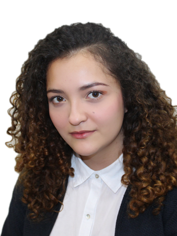

Alexandra Ardila

Economist with experience in processing, querying, maintaining,
and visualizing data to generate information that allows finding
business solutions and/or opportunities. Skilled in conducting
comprehensive project analysis, from technical development to
value-generating information generation.
Constant learning and implementation of new tools, as well as
possessing quantitative, analytical, and problem-solving
competencies facilitating process optimization and
improvement.
Education
Universidad EAN
2015 – 2019
Bachelor degree in economics with an emphasis on finances.
Work experience
Rappi – Data Analyst (Mid Senior)
February 2022 – Current:
- Creation of tables, views, stored procedures, and queries, as well as their maintenance using Snowflake (SQL).
- Creation and maintenance of dashboards using Power BI, utilizing DAX functions and PowerQuery.
- Use of GIT for code versioning through the Bitbucket tool.
- Preparation of technical documentation for dashboards and queries using Atlassian.
- Analysis and creation of metrics to identify new opportunities and/or explain the behavior of relevant variables for clients.
- Use of Python for georeferencing analysis of users.
Skills
Software
- Stata
- Python
- Microsoft Excel
- SQL
- GIT - Bitbucket
- Microsoft Power BI
Languages
- Spanish: Native
- English: C1 Certified by Smart Academy
Certifications
- Python Fundamentals Track - Datacamp
- SQL Fundamentals Track - Datacamp
- Introduction to Data Science: Statistical Programming with R - Coursera
About Me
Contact